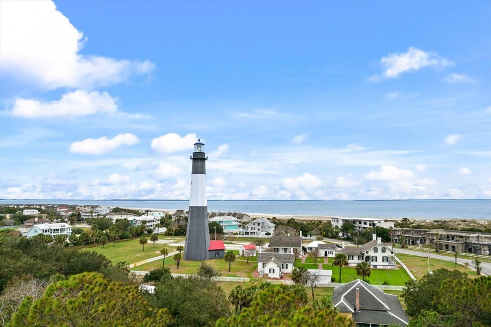
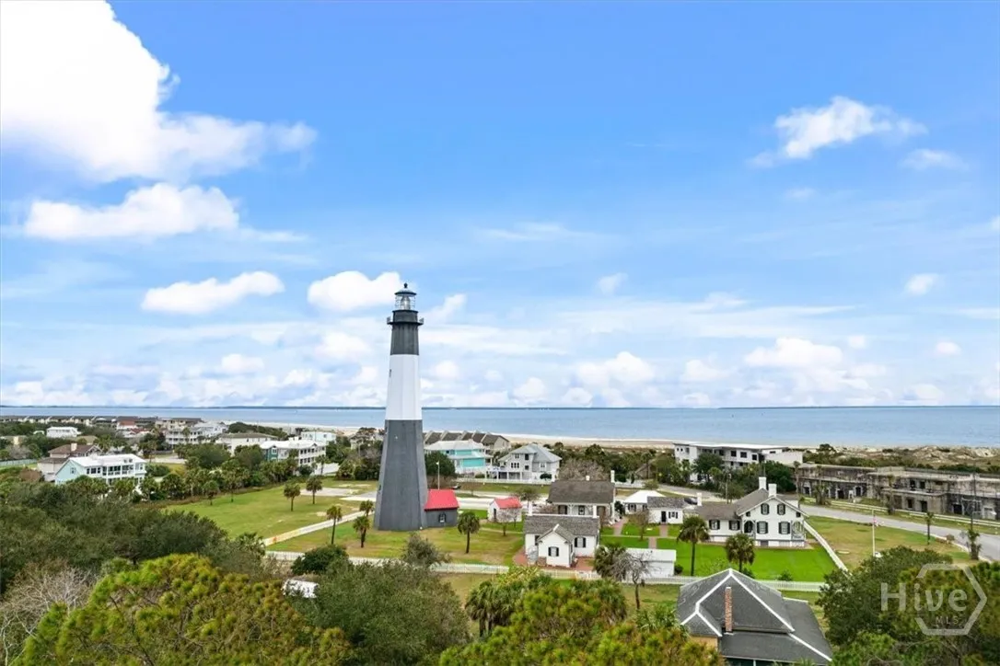

Photo pair 1


geometrically_supported
Shared-image context: SHARED IMAGE: shared-574 appears in 4 Airbnb listings; possible generic imagery or related hosts, not property-specific evidence
Hash / geometric comparison evidence
{
"hash_hamming": {
"dhash": 1,
"phash": 2,
"center_phash": 0
},
"hash_min": 0,
"priority_policy": "obvious_v2_both_phashes_le_6_realtor_shared_excluded",
"exact_hash_hamming": {
"phash": 2,
"center_phash": 0
},
"orb_ransac": {
"score": 0.917,
"detail": {
"inliers": 917,
"ratio_matches": 917,
"coverage": 0.2705108461877673,
"homography": [
[
1.0001368739326706,
0.0001996968856499583,
-0.01883759588701371
],
[
9.631909096857821e-05,
1.000563325189886,
-0.1395905205752229
],
[
1.4162803601452558e-07,
4.2412234768619585e-07,
1.0
]
]
},
"comparison_ms": 15.9709430008661,
"feature_lookup_or_extraction_ms": 55.75933700310998
}
}